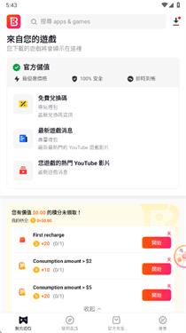

用了八个月的 BuffBuff，聊聊这个海外应用商店我到底留下了什么
从最初为了玩一款海外游戏装上 BuffBuff，到现在它静静地躺在手机里偶尔被我点开——八个月的时间里，这个平台的多账号克隆、版本更新、订单体系给我留下了哪些实际的变化？
当初为什么装它
说起来没什么特别的理由——就是朋友甩了个链接，说某款我想玩的海外游戏国内商店搜不到，在 BuffBuff 的官网上能下。抱着试试看的心态从官方下载装了，注册账号、填了玩家 UID、绑了一张能付外汇的卡，整个过程比我预想的顺利。那会儿对它的期待很简单：能下游戏、能充点券、别跑路就行。
装它到现在八个月，从 2025 年一月用到三月中，中间经历了三次大版本更新、两笔退款、一个游戏号的克隆迁移。现在回头看，当初的那个"能下就行"的期待还是太低了。
越用越顺手的：多账号克隆
我之前对多账号克隆这件事没太大感觉——不就是开两个小号吗？直到有一天主号被队友坑得心态爆炸，想单独开个小号练枪法，又不想注销主号重刷段位。
BuffBuff 的克隆功能入口藏在应用管理里，一开始我没找到，在设置里翻了半天才发现它叫「多开」。点进去之后系统弹出一个命名框，我填了「PUBG 练枪号」，确认之后屏幕闪了两下，桌面上多出了第二个图标。点开登录，界面和主版本一模一样，但数据完全隔离——主号里的段位、皮肤、设置，这边一概没有，从游客号开始练。

用了两个月，这个克隆号陪我度过了主号被队友坑的低谷期。后来我又克隆了一个 Discord 工作号，专门用来接收公司服务器的通知，和我平时加的游戏服务器彻底分开。这套隔离机制确实扎实——克隆实例的沙盒目录独立，卸载某一个不会影响其他，我试过把练枪号清掉，主号的数据纹丝不动。
唯一要注意的是存储。PUBG 本体就大，克隆两次相当于多占了一倍的空间。手机是 256G 的还好，小容量设备得掂量掂量。
越用越烦的：版本更新角标
版本更新提醒这个功能本身是好事——后台定期扫已装应用，有新版本就推角标。我在更新列表里点过几次「全部更新」，并行下载小体积应用、串行处理大游戏的策略也合理，不会把带宽全抢走。
但烦人的地方在这：角标有时候会卡。三月份那次更新之后，我的应用管理页一直显示有三个应用待更新，点进去又全是"已是最新版本"。刷新、杀进程、重开 App 都没用，等了两天自动好了，但那两天每次打开 BuffBuff 看到那三个黄点就觉得碍眼。
BuffBuff文档里说这是"平台版本信息同步延迟，等几小时或换网络再刷新"，我照做了，没用。最后只好手动把应用卸载重装，角标才消失。重装倒是保留了数据，没丢东西，但这个体验确实让人不爽。
离不开的：订单查询
这是我真正发现 BuffBuff 跟普通第三方商店不一样的地方。
三月初充一笔游戏点券，下单后 Processing 状态挂了快二十分钟没动静。换作以前我会急得在后台开十几个页面查，但这次我直接打开订单历史，点进去看时间线——创建时间、支付时间、处理时间一目了然，甚至还有一个实时的进度条。等到 Completed 的时候，App 还推了一条通知。
订单号是 HCS 开头的长串数字，我养成了每次下单后把它截图存备忘录的习惯。后来真用上了——有一笔退款申请，客服第一句就要 HCS 订单号，我直接甩过去，五分钟就进入审核流程。
说个反直觉的：我原本以为"订单查询"是个低频功能，只有出了问题才会点进去看。实际上它成了我每次大额充值后的标配操作——不是怕它出错，是喜欢那种"每一分钱都有时间线可查"的踏实感。
碰都没再碰的：钱包余额
钱包余额这个功能，我只用过一次——就是那笔退款。审核通过后钱秒到 BuffBuff 钱包，打开「我的 → 钱包」直接看到余额。
但文档里写了一个我当时没注意到的细节：钱包余额不能提现。我退了那笔钱之后，钱包里多了三百多块，要么继续充游戏用，要么就搁在那儿。不想再用 BuffBuff 的时候，这部分钱是取不出来的。
从那之后我选退款方式一律选原路退回，哪怕要等三到七天。信用卡退款确实慢，国内卡通常要五到六个工作日才能显示在账单上，但它能回到我的银行卡里，而不是锁在一个我不确定什么时候还会再打开的 App 里。
长期用下来的几个观感修正
高估了"方便性"。 一开始觉得 BuffBuff 就是"一键下海外游戏"，跟普通应用商店没区别。实际上它的多账号克隆和订单体系做得比我用过的任何国内商店都更完善——尤其是订单时间线和 HCS 订单号的设计，这在国内商店里是很少见的。
低估了"存储压力"。 克隆功能很爽，但每个克隆实例都占一份完整应用空间。我现在手机上有三个克隆应用（两个游戏、一个 Discord），算下来多占了将近 6GB。如果是 128G 的设备，可能真要掂量一下。
没变的：充值前想清楚。 钱包余额不能提现这件事，我到现在还是每次下单前都要提醒自己一遍。选退款方式的时候，是不是还想继续充、原支付卡会不会过期，这几个问题值得多花三十秒想清楚。
什么时候该换了
我不太可能卸载 BuffBuff。原因很简单：我的三个克隆应用的数据都在里面，搬出去比留在这儿麻烦多了。而且它的版本更新和订单查询这两件事，目前还没有找到更好的替代品。
但有两个信号出现我会认真考虑换：一是它的更新角标问题在最近两个大版本里还卡，二是如果它开始对钱包余额提现设门槛或收紧退款政策。目前都没出现。
手机里装着十几个应用商店，真正每天会点开的还是那两三个。BuffBuff 属于"不是每天，但关键时刻离不开"的那种——需要的时候在就好，安静地躺在应用列表里不添乱，就是我对它现在的全部期待。
资料维护这块，我顺手把相关说明同步到了 GitHub、Gitee 和 GitCode 三个常用的代码托管平台，国内用户访问哪个都行，版本同步也没什么压力。